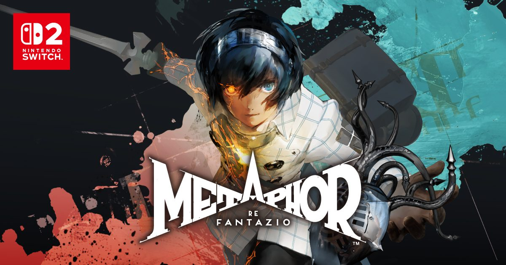

2026-11-11 · 单机深读

明天（11 月 12 日），拿过 TGA 2024 最佳 RPG、Metascore 94 的《暗喻幻想：ReFantazio》 登陆 Nintendo Switch 2。真正让这件事变得值得写的是定价： 普通版数字版从原价 9680 日元直接降到 3990 日元（港服 HKD 187 / 美服 $39.99）， 豪华的 ATLUS 35 周年数字纪念版从 15510 降到 5990（-61%）， 而且降价是全平台的——Steam、PSN、Xbox 同日生效，不是限时折扣，是改价。 Atlus 上一次对自己的主力 JRPG 下这种手，还没有先例。
Atlus 的传统艺能大家很熟：本篇卖一次，一年后出 Royal/Golden 加强版再卖一次， 内容加价不加量。但 Switch 2 版《暗喻幻想》反着来—— 不加一个剧情、不补一张地图、不送一套装束进普通版，只是降价 59%。 SEGA 官方话术写得很直白：「对新玩家而言完美的 Atlus 入门作」。 也就是说，这个版本的产品定位不是给老玩家的加强版，而是给没玩过的人的「低门槛入口」。 降价的本质是一次定价策略实验：当一款口碑已经封顶、销量曲线已经走平的作品 想再开一轮客源，与其堆内容，不如把门槛砍半。
背景里还有一层：Atlus 品牌 35 周年。周年纪念版捆绑数字设定集、原声 App 与全部 DLC （美服 $69.99），普通版则连服装 DLC 都不含——注意， 「不假设标准版包含服装和音乐包」是各家评测反复强调的坑。 阵营划分非常清楚：3980 日元级拉新客，5990 级收粉丝。昨天官方还按角色逐个放预告， 最后一位是尤吉夫族前骑士海斯梅——一个因种族被歧视的听觉天才， 这套逐日放预告的节奏，本身就是冲着「新玩家从零认识这支队伍」设计的。
各家媒体（RPG Site、Nintendo Insider、Nintendo Everything、Worthplaying）的评测结论高度一致， 我们汇总成一张决策表：Switch 2 版提供 Performance / Balanced / Graphics 三档， 底座与掌机可分开设置，但三档全部不锁帧、目标 60 帧且全部稳不住 60， 波动最狠的地方是主城 Grand Trad。Performance 模式相对流畅，代价是分辨率明显下降、 画面被评测者形容为「visually messy」；Balanced 与试玩版同档，被普遍认为是两全选择； Graphics 画质最好、掉帧最多，掌机下还显著耗电。试玩版里根本不存在这个菜单—— 它只有锁死的 Balanced 一档，正式版才解锁三选一。
两个容易被忽略的硬数字：安装体积约 62 GB（NS2 卡带是钥匙卡，数据照样要下满）； 免费试玩版的存档可以继承进正式版，但 PS5/Steam 存档没有 官方确认的跨平台转移通道。早购特典（阿基态经验香×10、果实×5、30000 reeve 与回复道具包） 数字版预购截止就是今天 23:59。
把账摊开：一款两年前发售、数字销量早已进入长尾的游戏，与其等玩家等 50% off 的历史低价， 不如直接把常售价砍到接近那个心理价位。对新玩家，「常售价 3990 日元」和 「原价 9680 打五折」的观感完全不同——前者是诚意，后者是库存。 对 Atlus，这同时是给 Switch 2 平台的一次站队：NS2 版售价低于其他所有平台， 相当于把「最便宜的玩《暗喻幻想》的方法」这件事变成了任天堂生态的广告。 而对行业，值得盯的是后续效仿者：当 TGA 最佳 RPG 都可以两年后腰斩常售价， 「年货式完全版」路线之外，多了一条「降价续命」路线可选。 《女神异闻录5 Royal》用五年把完全版模型做到了极致， 《暗喻幻想》现在示范的是同一间公司的反向操作——这大概是 Studio Zero 给行业的一份 「不按自家剧本走」的示范作业。
我们把人群切成四类，给一个能直接执行的决策树。没玩过 + 有 NS2： 今天先下免费试玩版，存档能继承，明天直接买 $39.99 普通版，这是全平台成本最低的入场方式； 想要设定集和原声再上 35 周年版。没玩过 + 只有 PS5/PC： 同日降价后 Steam/PSN 版也是新低价，等首周评测确认 PC 端优化无翻车即可入。 PS5/PC 老玩家想双持掌机版：不建议——没有跨平台存档转移， 70 小时以上的 RPG 从零重开，62 GB 的体积换不来这个体验差； 除非你的通勤时间确实只能用掌机。实体党：认清钥匙卡性质再下单， 盒子里没有游戏数据。至于帧数模式，我们的建议是直接 Balanced 开局， 等官方补丁（两家评测都在呼吁加 30/40 帧锁）落地后再考虑切换。
本站八月底写过《女神异闻录4 重制版》——那是「在黄金版还热卖时为什么重做一遍」的加法逻辑。 《暗喻幻想》Switch 2 版是同一间公司在两个月内给出的减法答案： P4R 靠重制拉新，《暗喻幻想》靠降价拉新。两者共同的前提是口碑资产已经沉淀完毕， 差别在于成本结构——重制是重资产、降价是零资产。一个月内的两次不同示范， 基本可以确认 Atlus 在 35 周年节点上做的是一次「拉新组合拳」的产品实验， 下一个被实验对象大概率是《女神异闻录》正传系。 如果这套「两年后全平台腰斩」跑通了销量曲线，整个 JRPG 的数字定价策略都会被改写。
我们的评分理由：给「这次发售动作」而不是给游戏本身打分。降价 59% 且全平台生效、 试玩存档继承、新玩家入口定位清晰，这三件事做得干净利落；扣分项是移植不锁帧、 Performance 模式观感粗糙、DLC 体系被切得过于精细（普通版连服装都不含）， 以及老玩家得不到任何存档迁移方案——这是一份完全服务新玩家的作业。 一句话总结：没玩过的人，明天 187 港币入正；玩过的人，这次 Atlus 没打算跟你收第二次钱——下次大概会换一种收法。